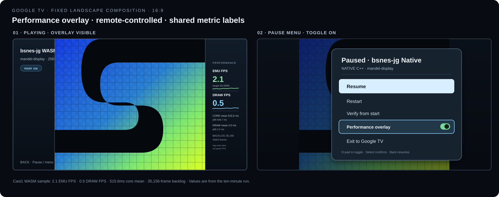

Updated plan · Google TV · 2026-10-27
Performance overlay for SNES apps
Status: In progress. All four APK variants build; Cast1 Native and WASM profile captures show live overlay values. The Native surface now fits the measured device viewport; landscape Pixel confirmation and remote-toggle checks remain open.
Show comparable live performance data while developing and comparing the Google TV builds. The same compact overlay and remote controls work in the standalone Mandelbrot player and the 152-ROM library, across both WASM and Native engines. It indicates whether the core keeps pace with the SNES clock without implying Android exposes physical display presentation timing.
Apps in scope
| App | Engine | Package | Start screen |
|---|---|---|---|
| Mandelbrot player | WASM | org.bsnesjg.tv | Boots mandel-display |
| Mandelbrot player | Native C++ | org.bsnesjg.tv.native | Boots mandel-display |
| ROM library | WASM | org.bsnesjg.tv.phase2 | Library; selected ROM plays |
| ROM library | Native C++ | org.bsnesjg.tv.native.phase2 | Library; selected ROM plays |
The overlay is for TV and phone app experiences. Keep the device in landscape, preserve the 4:3 SNES image, and derive the game bounds and side gutters from the current device viewport. The overlay starts visible in current development and comparison APKs and can be hidden with the remote.
High-fidelity screen mockups
The 4:3 SNES picture stays at maximum size. The engine badge and ROM identity sit in the left gutter; all profiling meters and sparklines fit in the right gutter without covering the image. The WASM meters use Cast1’s latest ten-minute run; the pause view shows the Native C++ label and remote toggle.

Metrics and labels
| Label | Definition | Notes |
|---|---|---|
| EMU FPS | SNES core frames completed per elapsed second | Compare with the NTSC target, 60.0988 FPS. This measures core progress, not TV refresh. |
| DRAW FPS | Completed app-side framebuffer submissions per elapsed second | WASM counts successful canvas submissions; Native counts completed GLES draw submissions. Neither is a display/compositor presentation rate. |
| CORE ms | Mean and p95 time spent stepping one SNES frame | Excludes renderer work. |
| DRAW ms | Mean and p95 app-side image conversion/submission work per draw | WASM measures framebuffer conversion plus putImageData; Native measures framebuffer copy plus GLES submission. Document the difference in exported measurements. |
| BACKLOG | SNES frames due but not yet stepped | Use existing scheduler credit for WASM and equivalent frame credit for Native. Zero means the core is keeping up with its target. |
Use fixed one-decimal FPS, milliseconds, and backlog. With no active ROM show EMU — and DRAW —. Never label app-side rates “display FPS.” Add Android presentation timing only if a validated source is available for both engines.
Controls and behavior
- Show the overlay by default in development and comparison builds.
- Add a Performance overlay toggle to the pause menu; show its current on/off state.
- Keep Back mapped to the pause menu. Do not add a hidden key chord.
- Persist visibility per app using the existing preference bridge. Default to visible if unset; retain the choice across ROM changes and app backgrounding.
- All controls must be reachable with Google TV D-pad and Select. Typing is not required.
- When hidden, stop DOM refresh and rolling-window aggregation while retaining existing instrumentation needed for profile logs. On re-enable, populate on the next sample window rather than showing stale numbers.
Measurement flow
steps + time→One-second
sampler→Shared metric
snapshot→Google TV
overlay
canvas submit→SamplerNative
GLES submit→SamplerD-pad pause-menu toggle→Overlay
Implementation outline
- Define a shared metric snapshot. Stable fields:
emuFps,drawFps,coreMeanMs,coreP95Ms,drawMeanMs,drawP95Ms,backlogFrames, andwindowMs. Use a monotonic one-second accumulator. - Feed WASM statistics. Extend TV-mode instrumentation in
web/app.js. Count successful canvas submissions separately from animation callbacks. Reuse the same sampling window for the overlay and coordinator log output where possible. - Feed Native statistics. In
MainActivity.NativeRenderer, accumulate core frame count and nanoseconds, GLES submissions, draw time, and frame credit. Publish one snapshot to WebView per second on the UI thread; never update WebView DOM from the GL thread or call through JNI every frame. - Add one shared overlay component. Package the same script and styles in all four variants. Connect it to the pause-menu controller and mount it in both standalone and library pages.
- Persist visibility. Default on for current comparison builds. Use the existing preference bridge and preserve state across pause, resume, ROM selection, and backgrounding.
- Verify both engines and app shapes. Build all four APKs, compare labels and units, then use coordinator-owned launch/profile jobs on a Chromecast and Pixel. Capture the same ROM and duration. Pixel data remains phone-form-factor evidence.
Visual placement
- Keep the game image centered at maximum 4:3 aspect; do not cover its pixels.
- Place unboxed meters in the dark right gutter. Use couch-readable values, sparklines, clear EMU / DRAW labels, and thin separators without a panel background.
- Keep ROM identity and existing status in the left gutter. Unboxed meters must not shrink the game or displace pause controls.
- Show a small
PERF ONmarker only while enabled. - Name the launcher apps
bsnes-jg WASMandbsnes-jg Native; show a matching WASM or NATIVE C++ badge in the selector and gameplay HUD. - Keep the layout identical across engines. Only the engine badge and live meter values change.
27 October device-sized layout
The Native C++ renderer now uses a centered 4:3 Android surface sized from the actual window dimensions. Side gutters are left for the responsive WebView panels. Shared CSS derives image bounds and gutter width from the WebView viewport, with top/bottom gutters for portrait viewports. The updated build passed and a Native profile on Cast1 shows the image and side panels aligned. The Pixel profile job was cancelled while the phone was locked. Cast1 responsive-layout evidence.
Acceptance criteria
- All four apps expose the same overlay, metric names, precision, and remote toggle.
- On the same device and ROM, stable WASM and Native EMU FPS agree within one frame per second unless backlog explains the difference.
- DRAW FPS counts actual app-side submissions rather than scheduled callbacks.
- Core and draw timing use a rolling one-second window; machine-readable logs include window duration.
- The overlay neither covers gameplay nor steals D-pad focus during play, and does not break library browsing or pause/resume.
- Disabled means no visible overlay and no recurring DOM metric update.
- No claim of physical display presentation FPS without a validated presentation timestamp source.
- Coordinator evidence contains launch captures and same-ROM WASM/Native comparison logs on Google TV hardware.
Out of scope
- Changing the emulator frame scheduler or NTSC target clock.
- Collecting SurfaceFlinger presentation timestamps or claiming panel refresh as app FPS.
- A desktop browser dashboard or keyboard-only controls.
- Persisting historical sessions in the apps; coordinator evidence remains the comparison record.